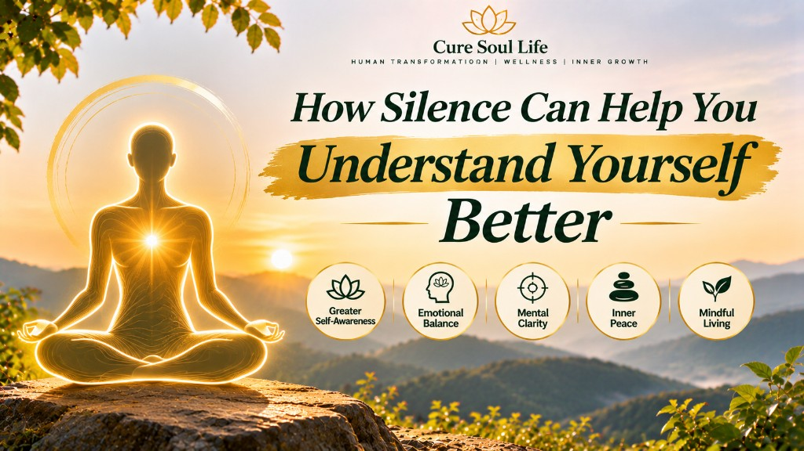

How Silence Can Help You Understand Yourself Better: The Power of Inner Awareness

When was the last time you sat quietly without checking your phone, listening to music, watching something or thinking about your next responsibility?
In a world filled with constant notifications, conversations, deadlines and digital distractions, moments of complete silence have become increasingly rare.
We wake up to alarms, spend our days surrounded by information and often end them with more screen time. Even when we are alone, our minds remain occupied with thoughts about work, relationships, responsibilities and the future.
But have you ever wondered what might happen if you simply stopped for a moment and listened to yourself?
Sometimes, the answers we spend years searching for are not found in more information, conversations or external experiences. They begin to emerge when we create space to understand what is happening within us.
This is where the power of silence becomes meaningful.
Silence gives us an opportunity to observe our thoughts, recognise our emotions and develop a deeper understanding of who we are.
It does not mean escaping the world or avoiding responsibilities. It means occasionally stepping away from external noise so that you can become more aware of your inner experiences.
In this article, we will explore how silence can help you understand yourself better, its relationship with self-awareness and mindfulness, and practical ways to introduce meaningful moments of silence into your everyday life.
What Is the Power of Silence?
Silence is generally understood as the absence or reduction of sound. However, its meaning can extend beyond the physical environment.
In personal development and mindfulness practices, silence can refer to intentionally creating moments without unnecessary external stimulation.
It is an opportunity to slow down, observe your thoughts and pay attention to your emotions without immediately reacting to them.
For example:
- Sitting quietly and noticing your thoughts.
- Walking in nature without listening to music.
- Spending a few minutes without checking your phone.
- Reflecting on your decisions without external opinions.
- Meditating in a peaceful environment.
These simple experiences can create opportunities for reflection and self-understanding.
Silence does not automatically produce wisdom or eliminate negative thoughts. However, when practised intentionally, it can help you become more attentive to your inner experiences.
Why Is Silence Important in Modern Life?
Modern life encourages constant engagement.
We receive messages, consume digital content, attend meetings, respond to responsibilities and remain connected to the outside world for most of the day.
Although technology has made communication easier, constant stimulation can leave little time for uninterrupted reflection.
Consider these everyday situations:
- You check your phone whenever you have a free moment.
- You listen to something even when performing simple activities.
- You feel uncomfortable when there is nothing happening around you.
- You immediately seek advice instead of first reflecting on a decision.
- You remain busy throughout the day without understanding how you actually feel.
These habits are not necessarily harmful on their own. However, when every quiet moment is filled with external stimulation, opportunities for self-reflection may become limited.
Silence allows you to pause and ask important questions about your life.
Am I happy with the way I am living? What is creating stress in my life? What do I genuinely want? Are my decisions aligned with my values?
Sometimes, the most valuable thing you can do for yourself is give yourself time to think without interruption.
10 Ways Silence Can Help You Understand Yourself Better
Silence can become a meaningful part of personal growth when you use it as an opportunity for awareness and reflection.
Here are ten ways it can support your journey towards self-understanding.
1. Silence Helps You Recognise Your Own Thoughts
Throughout the day, our attention is constantly influenced by external information.
Conversations, social media, news and other people's opinions can occupy much of our mental space.
When you spend time in silence, you create an opportunity to notice what is happening in your own mind.
You may begin recognising:
- Thoughts that repeatedly occupy your attention.
- Concerns that you have been avoiding.
- Personal expectations that create pressure.
- Ideas and goals that genuinely interest you.
- Beliefs that influence your decisions.
This awareness can help you understand your thinking patterns.
Instead of automatically accepting every thought, you can learn to observe it and consider whether it is useful, realistic or connected to your personal values.
2. Silence Helps You Understand Your Emotions
Sometimes, we know that something feels wrong but cannot explain exactly what we are experiencing.
We may feel irritated, disappointed, anxious or emotionally exhausted without understanding the reason.
Silence can provide an opportunity to pause and identify these feelings.
Ask yourself:
- What am I feeling right now?
- What might have triggered this emotion?
- Is there something I have been avoiding?
- What do I actually need at this moment?
Recognising emotions does not mean that you must immediately solve every problem.
It simply helps you become more familiar with your emotional experiences.
This awareness can support more thoughtful responses instead of impulsive reactions.
3. Silence Encourages Self-Awareness
Self-awareness means understanding your thoughts, emotions, motivations, values and behaviour.
Without reflection, it is easy to follow habits without questioning why we maintain them.
For example, you may continuously pursue a particular career because your family expects it, compare your achievements with others or follow a lifestyle simply because it is socially accepted.
A few moments of silence can create space to question these patterns.
Ask yourself:
- What genuinely matters to me?
- Am I living according to my own values?
- What kind of person do I want to become?
- Which habits are helping me grow?
- Which behaviours would I like to change?
These questions can help you develop a clearer understanding of yourself.
4. Silence Helps You Separate Your Own Voice From External Expectations
We are constantly exposed to opinions about how we should live.
Society may tell us what success looks like, what career we should choose, when we should get married and what achievements we should pursue.
Over time, these expectations can influence our decisions.
The problem begins when we become so focused on satisfying external expectations that we stop recognising our own preferences.
Spending time in silence can help you reflect on whether your choices genuinely represent your values.
It allows you to ask:
"Is this what I actually want, or is this what I believe I am expected to want?"
You may not find an immediate answer, but asking the question is an important step towards conscious decision-making.
5. Silence Can Help You Become More Mindful
Mindfulness is the practice of paying attention to the present moment with openness and without immediately judging your experiences.
Silence can provide a supportive environment for mindfulness because it reduces some external distractions.
You can practise it by:
- Sitting quietly and noticing your breathing.
- Observing sounds without trying to identify or judge them.
- Paying attention to physical sensations.
- Noticing thoughts as they appear.
- Gently bringing your attention back to the present.
Your mind may wander frequently. That is completely normal.
The purpose is not to stop every thought but to become more aware of where your attention goes.
6. Silence Creates Space for Better Decision-Making
When we feel pressured to make decisions quickly, we may react emotionally or depend too heavily on other people's opinions.
Taking a little time away from external distractions can help you evaluate situations more thoughtfully.
For example, before making an important career or personal decision, spend some time reflecting on:
- What are my available options?
- What are the possible consequences?
- What matters most to me?
- Am I deciding out of fear or genuine interest?
- What information do I still need?
Silence alone cannot guarantee the right decision, but intentional reflection can help you approach decisions with greater clarity.
7. Silence Can Help You Recognise What Truly Makes You Happy
Sometimes, we become so focused on achieving external success that we forget to understand what actually brings satisfaction into our lives.
We pursue more money, recognition, possessions and achievements because we assume that the next accomplishment will finally make us happy.
But personal fulfilment can also come from ordinary experiences.
It might be spending time with family, creating something meaningful, learning a new skill, helping someone or enjoying a peaceful morning.
When you create moments of quiet reflection, you can begin identifying which experiences genuinely matter to you.
This understanding can help you build a lifestyle that feels more meaningful.
8. Silence Can Help You Respond Instead of React
Not every situation requires an immediate response.
Sometimes, we say things during arguments that we later regret. We react to criticism without understanding the other person's perspective or make decisions while feeling emotionally overwhelmed.
Silence creates an opportunity to pause.
Before responding, consider:
- Do I understand what has happened?
- Am I reacting because I feel hurt or frustrated?
- Is an immediate response necessary?
- What would be a more constructive way to communicate?
A thoughtful pause can support better communication and emotional awareness.
Silence should not be used to avoid necessary conversations or punish others. Its value lies in creating space for a considered response.
9. Silence Can Deepen Your Connection With Nature
Nature offers many opportunities to experience quietness.
A walk through a garden, sitting beside a lake or watching the sunrise can create moments in which you are less occupied with digital distractions.
Instead of immediately reaching for your phone, try observing your surroundings.
Notice the wind, sunlight, birds, trees and changing environment.
These simple experiences can encourage present-moment awareness and help you reconnect with the world around you.
You do not need to travel to a remote location. A nearby park or quiet outdoor space can be enough.
10. Silence Can Support Your Journey Towards Inner Peace
Inner peace does not mean that you never experience difficult emotions, stressful situations or uncertainty.
It means gradually developing a healthier relationship with your experiences.
Silence can support this process by giving you time to reflect, recognise emotional patterns and understand what you can and cannot control.
Instead of constantly seeking answers from external sources, you can learn to become more comfortable with reflection and uncertainty.
Sometimes, you do not need an immediate solution.
You simply need the space to understand what is happening within you.
How to Practise Silence in Everyday Life
You do not need to spend hours meditating or completely disconnect from society to experience the benefits of quiet reflection.
Start with small and manageable practices.
1. Begin Your Morning With Five Minutes of Silence
Before checking your phone, spend five minutes sitting quietly.
Notice your breathing and allow yourself to become aware of your thoughts.
You can use this time to set an intention for the day.
2. Take a Silent Walk
Go for a short walk without music, podcasts or phone distractions.
Observe your surroundings and pay attention to the experience of walking.
Allow your attention to rest on what is happening around you.
3. Create a Screen-Free Period
Choose a specific period of the day when you avoid unnecessary digital distractions.
For example, keep your phone away during meals or spend the first 15 minutes after returning home without scrolling through social media.
4. Practise Silent Reflection Before Sleeping
Before going to bed, spend a few minutes reflecting on your day.
Ask yourself:
- What did I learn today?
- What made me feel peaceful?
- What created unnecessary stress?
- What would I like to improve tomorrow?
You can also write your reflections in a journal.
5. Try Short Meditation Sessions
Start with five to ten minutes of comfortable meditation.
Sit in a quiet environment, observe your breathing and gently return your attention whenever your mind wanders.
You do not need to force yourself to stop thinking.
The practice is about developing awareness.
Silence vs Loneliness: Understanding the Difference
One important distinction is that silence and loneliness are not the same thing.
| Silence | Loneliness |
|---|---|
| Can be a chosen experience | Often involves unwanted disconnection |
| Creates space for reflection | May involve feelings of isolation |
| Can be practised alone or with others | Often relates to unmet social needs |
| May support self-awareness | May be emotionally distressing |
| Can be peaceful and restorative | Can feel painful or overwhelming |
Enjoying time alone can be healthy, but human connection is also important.
Conscious living involves finding a balance between spending time with yourself and maintaining meaningful relationships with others.
If silence or isolation increases emotional distress, it is important to seek connection and support rather than forcing yourself to remain alone.
A Simple 7-Day Silence and Self-Awareness Challenge
If you want to experience intentional silence, try this beginner-friendly challenge.
Day 1 – Five Minutes of Silence
Sit quietly for five minutes without checking your phone.
Day 2 – Observe Your Thoughts
Spend a few minutes noticing what thoughts repeatedly enter your mind.
Day 3 – Silent Walking
Take a 10-minute walk without music or other digital distractions.
Day 4 – Emotional Reflection
Spend five minutes identifying and writing down your current emotions.
Day 5 – Digital Silence
Create a 30-minute period without unnecessary screen time.
Day 6 – Nature and Observation
Spend some time outdoors and pay attention to your surroundings.
Day 7 – Self-Reflection
Ask yourself what you discovered about your thoughts, emotions and habits during the week.
You can continue the practices that feel helpful and adjust them to your lifestyle.
Common Misconceptions About Silence
There are several misunderstandings about the role of silence in personal growth.
Misconception 1: Silence means having no thoughts.
Reality: Your mind will continue producing thoughts. Silence is an opportunity to observe them rather than eliminate them.
Misconception 2: Spending time in silence means avoiding people.
Reality: You can value quiet reflection while maintaining healthy relationships and social connections.
Misconception 3: Silence automatically creates inner peace.
Reality: Quiet moments can sometimes bring uncomfortable thoughts and emotions to the surface. Self-awareness develops through how you respond to these experiences.
Misconception 4: Silence is only for spiritual people.
Reality: Anyone can use quiet reflection as part of personal development, mindfulness and everyday well-being.
Misconception 5: You need hours of silence to understand yourself.
Reality: Even a few intentional minutes can create an opportunity for reflection.
Frequently Asked Questions About Silence and Self-Awareness
1. How does silence help you understand yourself better?
Silence creates an opportunity to observe your thoughts, emotions, habits and motivations without constant external distractions. Through regular reflection, you may become more aware of your values, needs and behavioural patterns.
2. What are the benefits of silence in everyday life?
Intentional quiet time can support self-reflection, mindfulness, emotional awareness and thoughtful decision-making. It may also provide a break from constant digital stimulation and everyday distractions.
3. How much time should I spend in silence every day?
There is no fixed requirement. Beginners can start with five to ten minutes of intentional quiet time and gradually adjust according to their preferences and comfort.
4. Does silence improve mental clarity?
Quiet reflection may help some people organise their thoughts and pay attention to their priorities. However, silence does not automatically remove confusion or solve every problem.
5. Is silence a form of meditation?
Not necessarily. Meditation is a structured practice that often involves attention, awareness or reflection. Silence can provide an environment for meditation, but simply sitting quietly is not always meditation.
6. Can silence help reduce overthinking?
Quiet reflection combined with mindfulness may help you recognise repetitive thought patterns and respond to them more thoughtfully. However, silence does not guarantee that overthinking will stop.
7. What is the difference between silence and solitude?
Silence refers to the absence or reduction of sound, while solitude refers to spending time alone. You can experience silence with other people and solitude in a noisy environment.
8. Why do I feel uncomfortable when I sit in silence?
When external distractions are reduced, you may become more aware of thoughts or emotions that were previously overlooked. This can feel unfamiliar or uncomfortable. Start gradually and choose a setting where you feel safe and relaxed.
9. Can silence improve self-awareness?
Silence can create opportunities for self-awareness by allowing you to reflect on your thoughts, emotional responses, habits and personal values.
10. How can I make silence part of my daily routine?
Start with a few quiet minutes in the morning, take occasional screen-free breaks, practise mindful walking and reflect on your day before sleeping. Choose simple habits that you can maintain comfortably.
Final Thoughts: Sometimes, You Need Silence to Hear Yourself
We spend much of our lives listening to other people, following expectations, consuming information and searching for answers outside ourselves.
We rarely pause long enough to understand what is happening within us.
But personal growth does not always begin with doing more, learning more or achieving more.
Sometimes, it begins with doing less.
Sitting quietly. Observing your thoughts. Understanding your emotions. Questioning your habits. Recognising what truly matters.
Silence cannot answer every question or remove every difficulty from your life. But it can give you the space to ask better questions and understand yourself more deeply.
You do not have to escape the world to reconnect with yourself.
You simply need to create moments in which the world does not demand all of your attention.
Because sometimes, the most important conversation you can have is the one you have with yourself.
At Cure Soul Life, we believe that true human transformation begins with self-awareness, conscious living and a deeper understanding of our inner experiences.
Take a few minutes today. Put away the distractions, embrace a little silence and give yourself the opportunity to listen within.
Your journey towards self-understanding may begin with a quiet moment.
Disclaimer: This article is intended for general educational and wellness purposes. It is not a substitute for professional medical or mental health advice, diagnosis or treatment.
Back to the blog